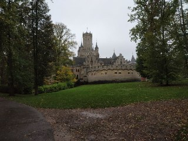

Introduction
I am Ankit, from India currently living in Berlin. After finishing my Bachelors in Electrical and electronics I decided to study masters in 2015 and came to Germany. Initially, I studied two semesters for masters in sensor technology at Hochschule Coburg's AIMS program. Later, I studied masters in data analytics at University of Hildesheim graduating in March 2020.
I work currently as a Data scientist at Lab1886, Berlin (incubator of Daimler AG). After recently finishing my master thesis in Natural language processing, I joined Lab1886 to work on another project which includes automating a complex business process using NLP, computer vision and analytics in the mobility industry.
Out of many fronts in Data Science in industry, I am most experienced in building backend AI solutions for applications, websites, software or platform. Building backend AI solutions involves creating algorithms which can automate processes like decision making, information extraction, database querying, data extrcation, data analysis etc. At Lab1886 we develop complex algorithms which can help automate business processes using deep learning, machine learning and data analysis. It involves writing a lot of efficient python code, analysis and intelligence from data in notebooks to explain a model behaviour, organizing training/querying tasks efficiently and in-depth critical analysis. I like to solve complex and challenging analytical problems using python and machine learning.
I like to work in teams and share my ideas openly with my colleagues. I also am self-driven and motivated as I am passionate for the work I am doing. I learned to work in collaborative teams where developers follow good practices of maintaining code which I enjoy a lot. In the long run, I would like to continue improving myself in programming and making state of the art methods in the field of AI useful in industry.
My core skills..
Alma mater
April 2017 - March 2020
M.Sc. Data analytics, University of Hildesheim (Germany)
-
Modules :
- Machine learning Two challenging machine learning courses (Machine learning 1 and Advanced machine learning). The first part covered all important algorithms including Linear regression, nearest neighbours methods, neural networks, decision trees, svm's and Bayesian networks, dimensionality reduction techniques and regularization. The advaned machine learning course covered topics like Generalized linear models, Gaussian processes and ensemble techniques.
- Deep learning All about numericals on perceptron, fully connected layers, convolution layers, RNN and LSTM's, activation functions and back-propagation in writting and code. Image and text processing models from popular research papers using tensorflow was also as a part of assignments.
- Big data analytics Handling large data bases, parallel processing, parallel/distriuted algorithms, RDMS, SQL
- Computer vision Image processing, Image augmentastion, convolution networks, classification, object detection
- Business analytics Forecasting, smoothing, Arima models, Time series classification, recommender systems, anomaly detection
- Natural language processing Named entity recognition, document clustering, text classification, tf-idf, word embeddings, text analysis using NLTK
- Reinforcement learning - Planning and optimal control Markov models, Markov decision processes, Q-learning
- Seminars on state of the art papers
- Advanced marketing
- Project - AlphaGo Zero Worked in a team of 4. Replicated Deepmind's alphaGo zero paper for a smaller 6*6 grid (due to computational limitations). Experimented with a hybrid semi-supervised model to tackle the long computing times of Monte carlo simulations.
- Master thesis - "Information retrieval in 2D context from unstructured documents" This thesis was an elaborate 6 months research on the topic entity detection. My topic was a special case where documents are unstructured meaning reading from these documents in a traditional left-right manner does not always make sense, e.g. flight tickets where important information lies in a table. Hence, for such data sets which are common in industry applications, I worked with generating context in 2-dimensional spatial manner, i.e. not just left-right but also top-bottom around a word.
As a part of assignments, the algorithm's steps needed to be written in python using only Numpy and Pandas (no scipy) which gave a very good understanding of algorithms and dynamic programming in python. Also these courses taught me good practices of training, testing and validation of models.
Keywords- LSTM, Entity detection, spatial context
September 2015 - March 2017
M.Sc. Sensor technology, Hochschule Coburg(Germany)
60 ECTS - Grade 2.6/4
-
Modules :
- Sensor technology
- Computer based measurement techniques
- Mathematical Data Analysis
- Exchange summer semester in Shanghai (China)
- University of Shanghai for Science and Technology
August 2010 - July 2014
Bachelors in Electrical and Electronics
University Institute of Technology, RGPV University, Bhopal (India)
Experience
December 2019 - current
Data Scientist @ Lab1886, Berlin (incubator of Daimler AG)


April 2019 - November 2019,
Scientific engineer intern, Omnius Gmbh, Berlin


October 2018 - March 2019
Quality management tool support,
Robert Bosch Car multimedia, Hildesheim (Lower saxony, Germany)
Skills
-
Programming
- Python
- Python modules development
- Api development
- Git
- Bash script
- Pycharm dev environment
- Docker
- HTML-CSS
-
Machine learning
- Scipy
- Supervised and unsupervised
learning algorithms - Regression analysis
- Classification and clustering algorithms
- Predictive analytics
- Reinforcement learning
- Anomaly detection
- Decision trees
-
Deep learning
- Tensorflow
- Pytorch
- Keras
- LSTM networks
- CNN
- CRF networks
- Attention
-
Natural language processing
- NLTK, Gensim, BERT, spacy
- Sequence tagging/NER/Entity detection
- Text data analysis and handling
- Document clustering and classification
-
Computer vision
- Tensorflow
- Imagenet
- Image analysis
- Computer vision
api (Turicreate)
-
Data analysis
- Pandas
- Numpy
- Excel
- SQL
- Seaborn
- Matplotlib
-
Tools
- Jira
- Git
Apart from work
In my free time I like to play board games, read on topics like history, politics and economy. I like road bikes and enjoy going on long tours.

I also like "Wandern" (hiking) and like to explore beautiful German nature
trails. A recent hike to "Brocken" (Harz mountains, Germany)
Cooking for me is an amazing exercise for my mind and helps me to focus better. I was also hosting a curry cooking event on Couchsurfing - Münster, where I met a lot of people from all over the world and enjoyed sharing food with them. A video a guest made for a university project ->
- © Template taken from HMTL5 UP. All rights belong to the owners
- Design: HTML5 UP